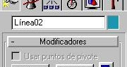

Se estudian y analizan los derechos fundamentales que amparan a los ciudadanos dentro del marco legal colombiano, reconociendo su importancia en la convivencia social y el ejercicio responsable de la ciudadanía.

Se exploran y documentan los requerimientos necesarios para el desarrollo del aplicativo web, definiendo las funcionalidades, herramientas y estándares técnicos que guiarán el proceso de construcción del software

Se diseña y estructura la experiencia visual del aplicativo web, aplicando principios de usabilidad y diseño para crear interfaces intuitivas y atractivas que faciliten la interacción del usuario

Se fortalecen las habilidades de comprensión y comunicación en inglés mediante el análisis de textos técnicos y situaciones del entorno laboral, preparando al aprendiz para desenvolverse en ambientes internacionales.

Se implementan soluciones de programación utilizando Python y sus frameworks para desarrollar la lógica del aplicativo web, aplicando buenas prácticas de código limpio y estructurado.
Se diseñan y construyen bases de datos relacionales que permiten almacenar, organizar y gestionar la información del aplicativo de manera eficiente y segura.

Se identifican y modelan las funciones principales del software, analizando su ciclo de vida y estableciendo estrategias de actualización y mantenimiento que garanticen su correcto funcionamiento a largo plazo